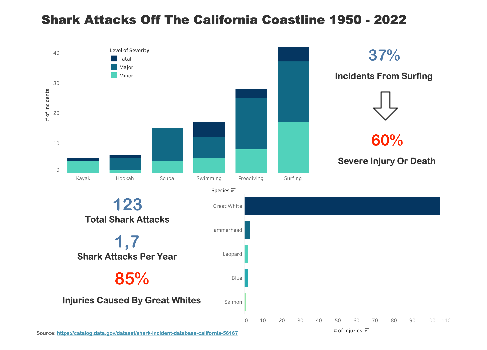

1. Data Preparation
Data integrity was a top priority. My goal was to prepare this longitudinal dataset for a full scale analysis:
- Utilizing Time: Extracted "Season" and "Time of Day" from timestamps to get a full understanding of each incident.
- Categorical Pruning: Only injuries considered to be minor, major, or fatal were included in this analysis.
- Missing Values: Discarded "Unknown" entries for "Species" and filtered out "Incomplete" reports.
2. Dashboard Presentation
I developed a simplified dashboard which emphasized KPIs and trends. This visualization revealed that the most dangerous activity to do in the water is surfing and it reified the assumption that Great Whites are the most dangerous species.

3. Predictive Modeling (Random Forest)
I deployed a Random Forest classifier to determine what drives the severity of shark attacks. The model achieved a 64% accuracy rate, a strong performance given the inherent noise and class imbalance in fatal incidents.
4. Feature Analysis
This analysis reveals that there are, in fact, things you can do to prevent yourself from being the next victim of a shark attack:
- Year: The strongest single predictor is "Year," but this is likely a side-effect of there being an overall decrease in deaths from shark attacks. Medical advancements and more granular reporting of minor incidents are likely to have made "Year" as strong of a factor as it is.
- Activity: There is a clear "severity gap" between Surfing and Freediving/Scuba. So, while surfers represent the highest volume of incidents, they more frequently sustain Minor injuries. In contrast, Freediving/Scuba incidents skew heavily toward Major or Fatal outcomes, likely due to the lack of a board as a physical buffer and the obvious constraint of being confined to the depths of the ocean (i.e., without immediate oxygen, the ability to speak, or seek aid).
- Species: The data exhibits a near-total dominance of the Great White in high-severity incidents. Meaning that if you had a choice to meet one shark, and would prefer to live on to tell the tale, it ought not to be the Great White.
- Additional Factors: A striking finding is that near the major breeding grounds of seals and sea lions (Farallon Islands, Año Nuevo, Point Conception, Morro Bay area, San Miguel Island), 71.6% of attacks resulted in "Major" or "Fatal" injuries. Outside of these areas, severe attacks drop to 42.9%. This indicates that when Great Whites are in these distinct areas, they are in a heighted predatory state and thus hunting to kill.
Full notebook and ML pipeline available upon request.
The verdict is in: Shark attacks remain extremely rare, but to exercise appropriate caution it is best to avoid lingering in their hunting grounds, where they regularly feed. After all, when a shark is hunting for food it tends to bite hard and ask questions later. Fortunately, many incidents along the coast are merely exploratory bites where a shark is "investigating" before deciding to engage further with their potential prey. If a shark doesn't like what it finds it tends to swim away. This "bite-and-release" pattern generally results in minor injuries, which means that outside of their hunting grounds you're much more likely to swim away with your life.